01
available: Rihanna's new album will be available in every single store on 14/2/2012.
(sẵn có (để dùng)) adj
02
broaden: The band wants to broaden audience by holding a world tour next year.
(mở rộng) v

03
category: He was nominated in many categories for the 52nd Grammy Awards.
(hạng mục) n
04
disparate: These two singers have totally disparate music styles.
(khác hẳn nhau) adj

05
divide: Music can be divided into many different genres.
(phân chia) v

06
favor: Tom can play many instruments but he tends to favor electric guitar.
(yêu thích) v

07
instinct: Michael started to create music when he was a child, it seemed an instinct.
(bản năng) n

08
prefer: My little son prefers playing piano to playing with his toys.
(thích hơn) v
09
reason: The reason why the band had to cancel their show is that all their instruments were damaged.
(lý do) n
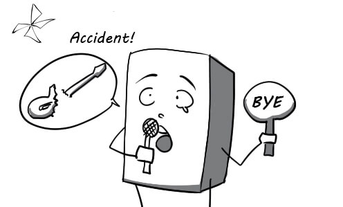
10
relaxation: Listening to classical music while sleeping in a hammock provides wonderful relaxation.
(sự thư giãn) n

11
taste: Everyone is shocked by his strange taste in music.
(khiếu thẩm mỹ) n

12
urge: His friends urged him to take part in the singing competition.
(thúc giục) v
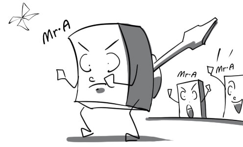
13
acquire: The museum acquired the world's first full dinosaur skeleton during heavy biding.
(giành được) v
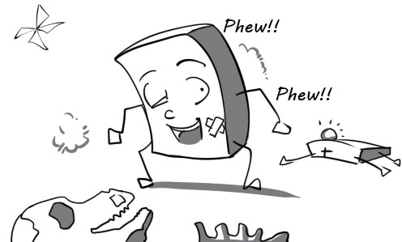
14
admire: The rising painter is admired by many people for his real talent.
(ngưỡng mộ) v
15
collection: The professor is presenting the museum's dinosaur bone collection to visitors.
(bộ sưu tập) n
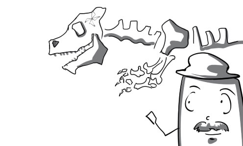
16
criticism: According to the criticism of experts, this ancient porcelain vase is fake.
(sự phê bình) n

17
express: The landscape painting expresses the artist's love for nature.
(thể hiện) v

18
fashion: Everyone was amazed with Vivien Westwood's latest fashion collection.
(thời trang) n
19
leisure: People with too much leisure always find their lives so boring.
(thời gian nhàn rỗi) n

20
respond: The manager does't know how to respond to reporters' questions about the disappearance of a Van Gogh painting.
(trả lời) v
21
schedule: The teacher scheduled our museum field trip in detail.
(lên lịch trình) v

22
significant: This diamond is so significant that the museum have it protected by two guards all the time.
(quan trọng) adj

23
specialize: This natural history museum specializes in dinosaurs.
(chuyên về) v

24
spectrum: This museum covers a broad spectrum of classical and modern sculptures.
(nhiều loại) n

25
assignment: The cameraman had to pay full attention when he was on assignment.
(việc được giao) n

26
choose: He wonders if he should choose a megaphone or a microphone to make his speech.
(lựa chọn) v

27
constantly: The reporter constantly runs around to collect the news for his articles.
(liên tục) adv

28
constitute: Good graphic design and interesting content constitute a successful website.
(cấu thành, tạo thành) v

29
decision: The director is the only one who can make the decision to shoot a scene.
(quyết định) n

30
disseminate: The news about the severe earthquake is disseminated across the world.
(phổ biến) v
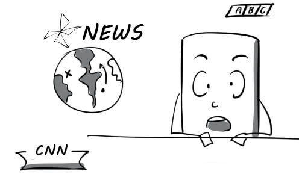
31
impact: Commercials have a huge impact on consumers.
(ảnh hưởng) n

32
in-depth: This channel provided in-depth coverage of the tragic car accident.
(toàn diện) adj

33
investigate: The reporter tried his best to investigate the facts about the political scandal.
(điều tra) v
34
link: There's a family link between the cameraman and the new reporter.
(mối liên hệ) n
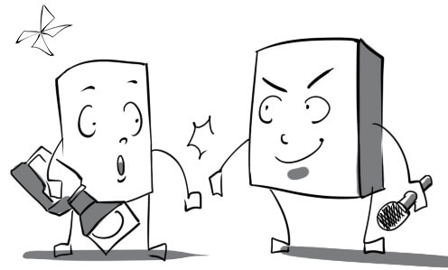
35
subscribe: Mary subscribes to a fashion magazine so that it will be delivered to her house weekly.
(đặt mua báo) v

36
thorough: The reporter was thorough in the preparation for his business trip.
(hoàn toàn, kỹ lưỡng) adj

37
annually: Peter get a health checkup annually to find problems before they start.
(hàng năm) adv

38
appointment: Mr Green set up a doctor's appointment at 7 a.m tomorrow.
(cuộc hẹn ) n
39
assess: Mr Cameron just had a doctor assess his health because he felt a little sick.
(đánh giá) v
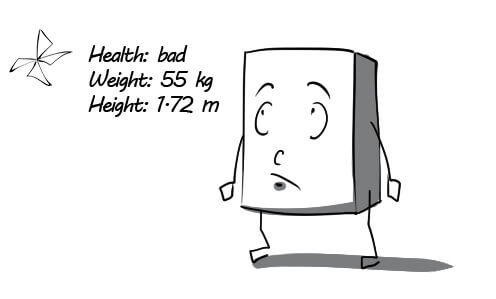
40
diagnose: The doctor is checking Tom's symptoms to diagnose his illness.
(chẩn đoán) v

41
effective: The medicine her doctor prescribed was really effective, her headache is completely gone now.
(hiệu quả) adj

42
instrument: Doctors use medical instruments in the diagnosis and treatment of medical conditions.
(dụng cụ) n
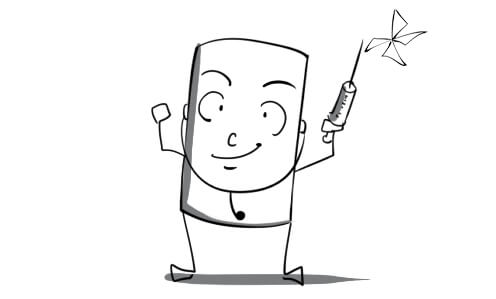
43
manage: Although the hospital was overcrowded, the staff still managed to take good care of their patients.
(xoay sở) v
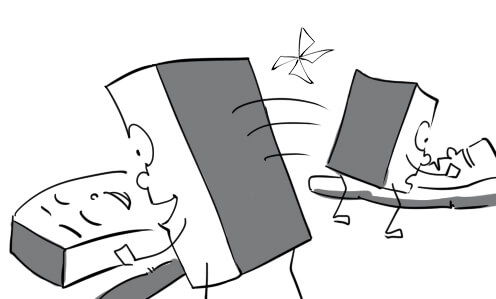
44
prevent: You should wear warm clothes to prevent flu in the winter.
(ngăn ngừa) v

45
recommendation: The doctor gave me some recommendations to help me improve my health.
(lời khuyên) n

46
record: Medical records are filed in alphabetic order in this hospital.
(hồ sơ) n

47
refer: My friend referred me to Doctor Albert because of his reputation.
(chỉ dẫn (ai) đến ) v

48
serious: The doctor wished to make a serious conversation with his patient.
(nghiêm túc) adj
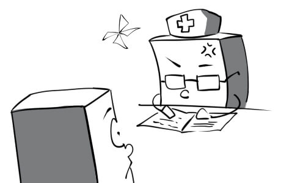
49
aware: The school carried out this campaign to make students aware of the importance of brushing teeth properly.
(nhận thức ) adj

50
catch up: My assistant is catching me up on tomorrow's schedule.
(cập nhật) v

51
distraction: The football match gave the dentist a distraction from the dental procedure.
(sự sao lãng) n
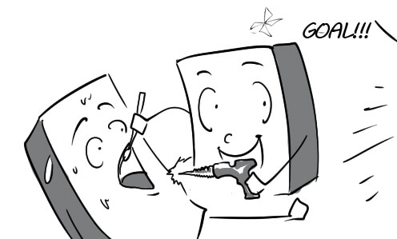
52
encouragement: The dentist gave me encouragement to brush my teeth three times a day.
(sự khuyến khích) n

53
evident: His tooth decay is so evident that the dentist doesn't have to examine him.
(rõ rệt) adj

54
habit: He has a habit of eating chocolate at night which is not good for his teeth.
(thói quen) n
55
illuminate: The dentist turned on more lights to illuminate the patient's mouth.
(chiếu sáng) v

56
irritate: Peter's gums are irritated by the oral antiseptic.
(làm rát) v

57
overview: The dentist did a overview of my teeth and fortunately they were really good.
(tổng quan) n

58
position: The dentist determined the position of his tooth decay.
(vị trí) n

59
regularly: Thomas goes to see his dentist for a checkup regularly.
(đều đặn) adv

60
restore: The dentist succeeded in restoring the whiteness of my teeth.
(khôi phục) v
61
allow: The nurse allows Tom to enter the doctor's office now.
(cho phép) v

62
alternative: Doctors will offer the patient an alternative solution if he isn't comfortable with the wheelchair.
(thay thế) adj
63
aspect: The greatest aspect of this aspirin is that it doesn't make you sleep.
(khía cạnh, mặt) n
64
concern: My doctor tells me to call him if I have any health concerns.
(sự lo ngại) n
65
emphasize: The nurse emphasized that I must bring my insurance card when coming back next week.
(nhấn mạnh) v

66
incur: My insurance plan just covers 20% of expenses, I have to incur the rest.
(gánh chịu) v

67
personnel: The personnel is divided into many departments. Each department undertakes specific tasks.
(nhân viên) n
68
policy: Everyone is happy with the new health policy issued by the government.
(chính sách) n

69
portion: I spend a portion of my income on health care.
(phần chia) n

70
regardless: The doctor still treats me well regardless of the fact that I don’t have health insurance.
(bất chấp) adv
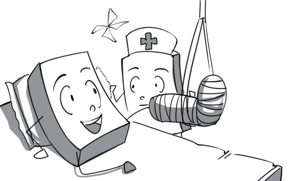
71
salary: Andrew receives his salary on the 22nd of the month.
(tiền lương) n

72
suit: This type of insurance doesn’t suit me, I don't have enough money to buy it.
(hợp với) v

73
admit: He was immediately admitted to the hospital after a severe car accident.
(nhận vào) v

74
authorize: Congratulations! You are authorized to go home now.
(chấp thuận) v

75
designate: This sign designates the forbiddance of smoking in the hospital.
(chỉ rõ) v

76
escort: The patient doesn't need an escort to take him to the bathroom.
(người đi theo) n

77
identify: His father can hardly identify him because he was damaged severely in the accident.
(nhận diện) v
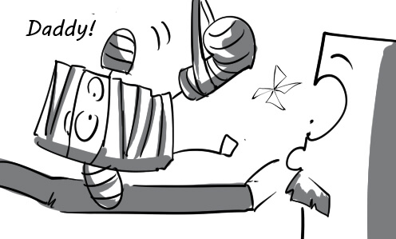
78
mission: Ambulance drivers always try their best to fulfill their missions.
(nhiệm vụ) n

79
permit: The nurse permits me to take a walk around the hospital.
(cho phép) v
80
pertinent: The doctor needs pertinent information about the patient's health record right away.
(có liên quan) adj

81
procedure: Everyone has to follow the procedure regulated by the hospital.
(quy trình) n

82
result: The patient was really shocked when he saw his test results.
(kết quả) n

83
statement: I am reading my bank statements to see how much I spent this month.
(bản kê) n

84
usually: Doctors are usually in a rush because the hospital is overcrowded.
(thường thường) adv

85
consult: You should consult with your doctor before taking new medicine.
(tham khảo) v

86
control: The purchasing of medicine is controlled by the senior pharmacist.
(kiểm soát) v

87
convenient: It is more convenient to carry out surgery when the patient is unconscious.
(thuận lợi) adj

88
detect: The doctor examined his patient to detect if he had cancer.
(tìm ra) v

89
factor: Medicinal herbs are factors that contribute to the effectiveness of this medicine.
(nhân tố) n

90
interaction: The interaction of the two medications I am taking always make me sleepy.
(sự tương tác) n
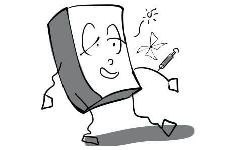
91
limit: The pharmacist set a limit on the amount of pills I can take everyday.
(giới hạn) n
92
monitor: The nurse carefully monitors temperature of the patient.
(giám sát) v

93
potential: This disease should be taken seriously due to its potential death risk.
(tiềm tàng) adj

94
sample: The pharmacist is testing a sample of the new medicine.
(mẫu thử) n
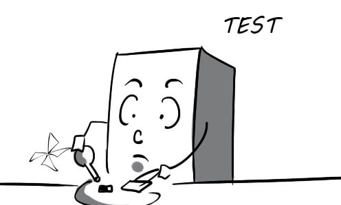
95
sense: The doctor had a good sense about what disease he had.
(khả năng phán đoán) n
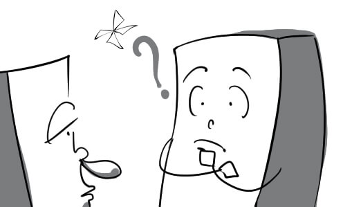
96
volunteer: Alex volunteered to donate his blood for a community supply.
(tình nguyện) v